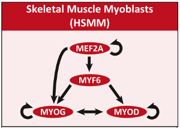
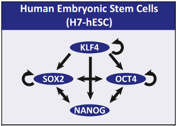

5.2.1. Exercises: dictionaries¶
5.2.1.1. Exercise 5.1¶
Study the following code:
my_dictionary = {} # initialize empty dictionary. NOTE the curly brackets (as opposed to SQUARE brackets to initialize an empty list)
my_dictionary['green'] = 'color' # key = 'green', value = 'color'
my_dictionary['volvo'] = 'car' # key = 'volvo', value = 'car'
my_dictionary['number_of_fingers'] = 10 # key = 'number_of_fingers', value = 10. Note, value is a number (not a string, so no quotes '')!
print("dictionary:",my_dictionary)
print("value associated with key 'volvo':",my_dictionary['volvo'])
Modify this code such that the dictionary also contains the key/value pair (‘opel’,’car’).
Modify this code to add a key/value pair to the dictionary where 10 is the key and ‘number_of_fingers’ is the value (so the reverse of key/value pair that is already in the dictionary.
Verify your code by running it and checking the output.
5.2.1.2. Exercise 5.2¶
You can also initialize a dictionary as follows:
my_dictionary = {'A':1,'B':2,'C':3}
print("dictionary:",my_dictionary)
print("value associated with key 'A':",my_dictionary['A'])
Use this syntax to create the dictionary from the previous exercise.
5.2.1.3. Exercise 5.3¶
I want the following code to print the value associated with the key ‘B’. However, the code contains an error.
my_dictionary = {'A':1,'B':2,'C':3}
print("value associated with key 'A':",my_dictionary[B])
Run the code and see if you can find where the error is and correct it so that it does print the value associated with key ‘B’.
5.2.1.4. Exercise 5.4¶
Study and run the following code:
my_dictionary = {'A':1,'B':2,'C':3}
my_dictionary['A'] = 5
print("value associated with key 'A':",my_dictionary['A'])
Question: why is the value associated with the key ‘A’ the number 5 and not the number 1?
5.2.1.5. Exercise 5.5¶
Glossary for this exercise:
target gene : The genes in whose promoter a given binds. For instance, in the mouse ES cell network, NANOG binds in the promoter of SOX2, and therefore we call SOX2 a target gene of NANOG. Vice versa, SOX2 binds in the promoter of NANOG, so NANOG is also a target gene of SOX2.
You are now going to write Python code to store the Muscle network in a dictionary. Create a dictionary variable that contains all the regulatory relationships between the TFs in the Muscle network. The keys of the dictionary should be the names of the TFs. The value for each key (representing a TF) should be a list that contains the target genes of that TF. At the end of your code, print the dictionary.
Hint: you can create a dictionary with a list as a value for a key as follows:
my_dictionary = { 'cars' : ['opel','volvo','subaru'] }
print('dictionary:',my_dictionary['cars'])
5.2.1.6. Exercise 5.6¶
Study and run the following code:
my_dictionary = {'A':1,'B':2,'C':3}
for variable_1 in my_dictionary:
variable_2 = my_dictionary[variable_1]
print('variable_1:',variable_1, 'variable_2', variable_2)
Question: does the variable named variable_1 contain keys or values from the dictionary?
Question: does the variable named variable_2 contain keys or values from the dictionary?
Question: what would be a more appropriate (more insightful) name for the variable variable_1?
Question: what would be a more appropriate (more insightful) name for the variable variable_2?
5.2.1.7. Exercise 5.7¶
Now adapt the code from exercise 5.6 so that it adds 4 to each value retrieved from the dictionary and prints this to the screen, together with the key. Use the more appropriate variable names instead of variable_1 and variable_2.
NOTE You are not allowed to change the dictionary itself in the process.
5.2.1.8. Exercise 5.8¶
The dictionary esrrb contains the number of Esrrb peaks per chromosome from an Esrrb ChIP-seq experiment (Chen et al. 2008, 13;133(6):1106-17, PMID 18555785).
The dictionary ‘chrsizes’ contains the length (bp) of each chromosome in the mouse genome (mm9).
esrrb = {
'chr1': 1160,
'chr10': 1171,
'chr11': 1887,
'chr12': 799,
'chr13': 844,
'chr14': 535,
'chr15': 946,
'chr16': 708,
'chr17': 1098,
'chr18': 638,
'chr19': 660,
'chr2': 1771,
'chr3': 838,
'chr4': 1800,
'chr5': 1630,
'chr6': 1088,
'chr7': 1434,
'chr8': 1183,
'chr9': 1286
}
chrsizes = {
"chr1": 197195432,
"chr2": 181748087,
"chrX": 166650296,
"chr3": 159599783,
"chr4": 155630120,
"chr5": 152537259,
"chr7": 152524553,
"chr6": 149517037,
"chr8": 131738871,
"chr10": 129993255,
"chr14": 125194864,
"chr9": 124076172,
"chr11": 121843856,
"chr12": 121257530,
"chr13": 120284312,
"chr15": 103494974,
"chr16": 98319150,
"chr17": 95272651,
"chr18": 90772031,
"chr19": 61342430,
"chrY": 15902555
}
What is the python command to obtain the number of peaks on chr6?
The number of peaks for chr11 contains a typo. This should be 1878. Correct this in the dictionary
Write a statement that answers the question whether chrX is present in
esrrb.Expand the code of 3. so that the correct key-value pair is inserted in Esrrb in case chrX is missing (chrX has 180 peaks)
Get the number of peaks for chrY. What’s going on here?
Using the two dictionaries above, calculate the peak density (number of peaks per bp) for chr15. Do not manually type the numeric data
Write a loop that will print the peak density for each chromosome.
5.2.1.9. Exercise 5.9¶
Using the keys and values of the dictionary “cod2aa”, make a new dictionary (e.g. “aa2cod”) that does the reverse of cod2aa: mapping amino acids to codons. Here is your starting point:
cod2aa = {'TTG': 'Leu', 'AGC': 'Ser', 'CTA': 'Leu', 'ACT': 'Thr'}
Which problem did you encounter? Could you provide a solution to this?
5.2.1.10. Exercise 5.10¶
For these excercises you will use a dictionary with codons as keys as amino acids as values. Create this by running this command (using copy-paste):
codons = {'aaa': 'K', 'aac': 'N', 'aag': 'K', 'aat': 'N', 'aca': 'T', 'acc': 'T', 'acg': 'T', 'act': 'T', 'aga': 'R', 'agc': 'S', 'agg': 'R', 'agt': 'S', 'ata': 'I', 'atc': 'I', 'atg': 'M', 'att': 'I', 'caa': 'Q', 'cac': 'H', 'cag': 'Q', 'cat': 'H', 'cca': 'P', 'ccc': 'P', 'ccg': 'P', 'cct': 'P', 'cga': 'R', 'cgc': 'R', 'cgg': 'R', 'cgt': 'R', 'cta': 'L', 'ctc': 'L', 'ctg': 'L', 'ctt': 'L', 'gaa': 'E', 'gac': 'D', 'gag': 'E', 'gat': 'D', 'gca': 'A', 'gcc': 'A', 'gcg': 'A', 'gct': 'A', 'gga': 'G', 'ggc': 'G', 'ggg': 'G', 'ggt': 'G', 'gta': 'V', 'gtc': 'V', 'gtg': 'V', 'gtt': 'V', 'taa': '*', 'tac': 'Y', 'tag': '*', 'tat': 'Y', 'tca': 'S', 'tcc': 'S', 'tcg': 'S', 'tct': 'S', 'tga': '*', 'tgc': 'C', 'tgg': 'W', 'tgt': 'C', 'tta': 'L', 'ttc': 'F', 'ttg': 'L', 'ttt': 'F'}
Provide the Python code that uses a loop to print for each codon its sequence and the amino acid it encodes (e.g. “aaa encodes K”).
Extend this code so that that it only prints the codon sequence if it encodes a stop codon.
Create an empty list named ‘leu’ using
[]. Loop through thecodondictionary and add all codons for ‘L’ (leucine) to the list ‘leu’. After running your code, ‘leu’ should contain 6 codons.
5.2.1.11. Exercise 5.11¶
Extend your code from 4.11 to print the protein sequence encoded by the longest ORF.
5.2.1.12. Exercise 5.12¶
In this exercise you will compare the behaviour of lists and dictionaries with respect to indexing.
Study and run the following example:
my_list = ['A','B','C'] # initialize the list
my_dictionary = { 0 : 'A', # init the dictionary
1 : 'B',
2 : 'C' }
print("0:",my_list[0], my_dictionary[0])
print("1:",my_list[1], my_dictionary[1])
print("2:",my_list[2], my_dictionary[2])
You should see that for any given index (0,1 and 2), my_list and my_dictionary return the same value.
Now run the following example:
my_list = ['A','B','C'] # initialize the list
my_dictionary = { 0 : 'A', # init the dictionary
1 : 'B',
2 : 'C',
5 : 'F' }
print("0:",my_list[0], my_dictionary[0])
print("1:",my_list[1], my_dictionary[1])
print("2:",my_list[2], my_dictionary[2])
print("my_dictionary[5]:",my_dictionary[5])
print("my_list[5]:")
print(my_list[5])
Question: can you retrieve the value for key 5 from the dictionary?
Question: can you retrieve the value for key 5 from the list? Why not?
Now adapt the code by changing the initalization of the list (first line) such that
mylist[5]
contains the value ‘F’, and as a result “print(my_list[5])” actually prints the letter F to screen.
Hint: you need to initialize the list in such a way that 5 is a valid index for the list.
Question: what is the minimum length of the list required to accomplish this?
Question: Why is not possible to define a list (for instance, my_list) with only 4 items that still produces a value for index 5 (my_list[5])?
Question: Suppose you have a consecutive list of indices (or integer keys) 0,1,2,3,4,…,100 and corresponding values. Which type of variable is more efficient to store and access these keys and values: a list or a dictionary?
Question: Suppose you have a sparse and non-consecutive list of 4 integers (for instance 1,2,10000 and 2000000) and associated values (for instance ‘A’,’B’,’C’ and ‘D’). Which type of variable is more efficient to store and access this particular combination of keys and values together: a list or a dictionary? Explain why!
5.2.2. Exercises: Putting it all together¶
5.2.2.1. Exercise 5.13¶
You are now going to write Python code to store a transcription factor regulatory network (Neph et al., Cell 2012) in a dictionary. Create a dictionary variable that contains all the regulatory relationships between the TFs in the Skeletal Muscle network shown below. The keys of the dictionary should be the names of the TFs. The value for each
key(representing a TF) should be alistthat contains the target genes of that TF. At the end of your code, print the dictionary.

Do the same for the Embryonic Stem Cell (ESC) network shown below, and print the dictionary.

Write Python code that prints each target gene of OCT4 in the ESC network using a
forloop. To answer this question, first think of how you can retrieve the target genes of ‘OCT4’ (which is thekey) from the ESC network dictionary. Use the name targetGene for the loop variable. Remember that the code needs to be able to produce the output when run in a new session of Python, so you need to include the definitions of the networks as well in your answer.Write Python code that does the following:
Create a new empty dictionary named mergedNetwork
Store in mergedNetwork all the regulatory relationships that are present in the Muscle network dictionary. Use one for loop to iterate over the TFs stored as keys in the Muscle network dictionary.
Store in mergedNetwork all the regulatory relationships that are present in the ES cell network dictionary. Use again a for loop.
Print the mergedNetwork
Write Python code that prints all the regulatory relationships stored in the mergedNetwork dictionary in the following format (here illustrated for the ES network, where “->” signifies that NANOG binds to the promoter of OCT4):
KLF4 -> KLF4
KLF4 -> NANOG
...
NANOG -> OCT4
5.2.2.2. Exercise 5.14¶
The purpose of this exercise is to simulate in a very simplified and not necessarily realistic way the dynamics of a regulatory network.
Your program should have the following components:
Create a dictionary called TFsBindingInPromoter of the Muscle regulatory network (see picture above) in an alternative form: for each TF, this dictionary should store for each TF which TFs bind in its promoter. Note that this is a different way of representing the regulatory relationships than in the above exercise.
Create a dictionary variable TFState that contains the state of each transcription factor. As the time proceeds, the state of the variables will be updated. Each transcription factor can be in one of two states. State 0 will represent the situation where the TF is not expressed; State 1 will represent the situation where the TF is expressed. Thus we will use numerical (
integer) variables to track the state.Put all the TFs in the 0 state (ie not expressed). Use a
forloop to set the value to 0.Put MEF2A in the expressed state (ie assign its state variable the value 1).
Dynamics Then simulate the dynamics of the regulatory network in time by assuming that all interactions between the TFs are positive.
Each time the state of a TF is updated, print the state of the complete network (ie print the dictionary TFState).
How to write the Python code for the simulation of the dynamics
Loop 1 The idea is to do 3 time steps and see how the state of the network changes (this defines your first for loop)
Loop 2 At each time step, the state of all TFs in the networks are updated (this requires a second nested for loop, which is over TFs).
Loop 3 A given TF is updated depending on the state of the TFs that bind in its promoter (e.g. MYF6). This therefore requires a third loop. If at least one of the TFs binding in the promoter are expressed, then the TF itself (the target) will become expressed. This is the consequence of our assumptions that all regulatory interactions are positive. It is also called an update rule. You will thus need a third nested
forloop to iterate over all the TFs that bind in the promoter of the TF whose state is being updated. Within this for loop you need anifstatement to determine if one of the input TFs is expressed. If so, then you change the state of the TF you are updating.After you have checked all the inputs of a given TF and updated if necessary, print the state of the network as recorded in the dictionary TFState.
Finally, run the program and answer the following question: what is the final state of all the TFs in the network?
Now do exactly the same, but instead putting “MEF2A” in the expressed state, put “MYOD” in the expressed state. Experiment with the number of time steps. What do you see? Is the end result the same? Explain how this result follows from the structure of the network. What does this tell you about the biology of differentiation of muscle cells (assuming the model and simulation are correct)? Is this conclusion biologically valid (bonus question)?